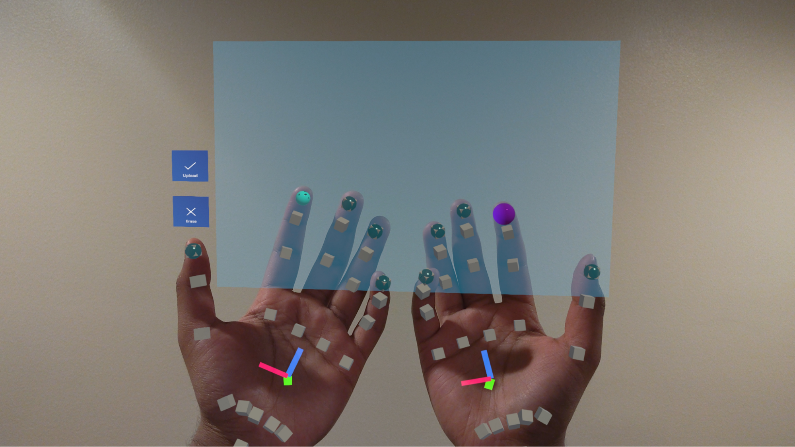

The holographic whiteboard was developed to make mathematics and drawing on digital devices feel more natural and immersive. We hoped to replicate user experiences when using physical whiteboards or paper but also allow users to access powerful computational software. We created an AR application that allows users to draw on virtual whiteboards utilizing HoloLens 2’s hand tracking technology. To allow users to do computations we utilized Azure Cognitive Service Optical Character Recognition (OCR) to recognize text and numbers that users drew. We sent the recognized text to Wolfram Alpha to perform and display the results of the calculations. By adding a glow effect to the virtual whiteboards on collision we were able to provide a more responsive user experience. The final application provides the basic experience of drawing and computation in Augmented Reality (AR). Each individual part such as the OCR and hand interaction can be improved on and refined for a final user product on any AR device.
Whiteboards have been an essential tool for learning and presentations and are used in universities, schools and workplaces to display designs, mathematics and other designs. These physical objects are intuitive to use and easy to acquire however mathematics on digital devices are not always as intuitive. Complicated mathematical expressions such as matrices and graphs are difficult to type up and mathematicians often rely on tools such as LaTeX that take time to learn and master. To bridge this gap we wanted to create an application that modeled physical whiteboards but also allowed users to utilize all the advantages of digitalization such as rapid computation and AI interaction. In this paper we will present our HoloLens application which combines multiple software tools to provide a novel but familiar drawing experience.
Our application heavily relied on Unity and Microsoft’s Mixed Reality toolkit (MRTK) to develop and run the application on the HoloLens 2. We leveraged the HoloLens 2's hand tracking technology to allow users to interact with the AR scene freely rather than utilizing controllers or buttons. We also integrated Azure Cognitive Service Optical Character Recognition (OCR) to accurately identify and interpret text and numbers that users draw on the virtual whiteboards. Then, we sent the recognized text and numbers to Wolfram Alpha API, an answer engine developed by Wolfram Research in 2009 that can perform computations, access vast amounts of research data and make mathematical visualizations.
To enhance the user experience, we incorporated a glow effect on collision, ensuring a responsive and visually engaging interaction with the virtual whiteboards. This was inspired by research conducted by Oscar Salandin and Microsoft Mixed Reality Studios which found that users had more immersive experiences in AR when the objects they interacted with glowed in response to tactical feedback. We wanted to experience this for ourselves and see if adding such glow interaction will make our application more intuitive to users. We hoped to create a new experience that used different technologies that were only developed relatively recently, such as the aforementioned Azure cloud OCR and Hand Tracking.
To realize our vision of a comprehensive AR application for drawing and mathematical computations, we developed a HoloLens 2 application using Unity and Microsoft's Mixed Reality Toolkit (MRTK). This section provides an overview of the methods and implementation details employed in our project.
We utilized Unity, a popular cross-platform game engine, along with MRTK, a framework specifically designed for building mixed reality applications, to create our HoloLens 2 application. Unity allowed us to create game objects such as the board and using the physics systems we were able to add interactivity. Unity provided most of the tools we needed including a physics engine, lighting, shaders, audio, and internet connectivity. Using C# scripts we were able to add more interaction and use web clients to call the respective APIs for Azure and Wolfram Alpha.
The Microsoft Reality Toolkit contains many packages intended to help with AR development including Hand Tracking, Scene Rendering and Spatial Audio. These libraries provided several prebuilt scripts that we can use to quickly add new features to our AR application such as near action interactivity. The toolkit also provided standard UI elements such as buttons and display boxes present in most HoloLens applications. MRTK also provides shaders and lighting effects optimized for the HoloLens. For debugging purposes we were able to simulate the application in Unity itself including testing hand interactivity. However some scenes would be shaded and lighted differently in the HoloLens vs the editor. However, through visual studio we were able to build and deploy our application remotely into the HoloLens and test our code in an actual AR environment.
MRTK is only available on Windows and therefore collaboration was limited, however as Unity works on both Mac and Windows we were able to code components separately but we had to test together on one device.
Microsoft Reality Toolkit allows various different ways of interacting with AR scenes such as controllers and voice commands but the standard approach is to use hand tracking. The HoloLens tracks 25 different locations on each hand including joints and finger tips and also a normal axis out of the palm. The MRTK toolkit provides a library to access the pose of each point in world space allowing us to create other objects such as cubes and spheres to follow the location of our fingers. MRTK allows you to render a mesh over both hands however this takes significant compute power instead we chose to limit ourselves to using 5 spheres on each finger tip. This reduced how much interactivity we could have but it saved performance costs especially as the HoloLens was overheating in some instances.
The toolkit also provided libraries to detect pinches which we used for moving objects from a distance. Since we had a pen on one finger we didn’t want users drawing and involuntarily moving the board and therefore we decided to use two handed interaction from a distance, HoloLens allows far interaction by projecting a ray out of the palm of your hand that can be used to select object at a distance and when the hand tracker detects a pinch it will grab the object. Grabbing the object was however limited as HoloLens could only detect pinches with index and thumb instead of grabs with all fingers. The HoloLens hand tracking was relatively consistent however there was noticeable latency in updating the pose.
We used a list of LineRenderer objects in Unity to represent each stroke drawn by the user. Therefore, if the user draws “100”, there will be 3 line renderer objects in our list. Collisions between the finger and the board are used as a trigger/event for the line rendering event to occur. When a new collision is detected, a new LineRenderer object is initialized. When the finger moves, new coordinates of points of collision are added to the list of points to be rendered in LineRenderer. We transform the points into local coordinates and make them all fall on a single floating surface with a constant z value from the board to prevent drawing at different depths on the board. We also included functionality to clear/destroy all the strokes by clicking the clear button.
In order to parse mathematical expressions and convert them into textual representations, we have integrated Azure Cognitive Service OCR into our system. This integration allows us to accurately recognize and extract text and numbers written on virtual boards, enabling users to seamlessly perform mathematical computations based on the recognized expressions. To capture the user's drawings, we experimented with two different approaches.
In the first approach, we looped over the coordinates of the points in the list of LineRenderer and used them to fill up a plain Texture2D object. By default, each pixel in the texture was set to white, and we blackened the corresponding pixels where points were drawn. While this approach worked reasonably well, we discovered that it produced poor-quality images if the user drew at a high speed. The sparse placement of points in the final image resulted in a loss of clarity and accuracy.
To overcome this limitation, we developed a second approach. We created an additional layer of a drawing board that also captured the lines drawn by the user. We introduced a new camera object that pointed at this board, allowing us to capture its image at runtime when the user clicked a button. By utilizing this approach, we achieved higher-quality images that could be easily parsed by the OCR service. The new camera ensured that the lines were accurately captured, even when drawn at high speeds, resulting in clearer and more precise images. The camera was set to view the photo layer which contained only the line renderer and a white background. This provided a good image of the text highlighting the contrast better than what was seen by the user.
Then, we created a resource group on Azure server and enabled the Compute Vision Cognitive Service. Then, we extracted the key and endpoint and added it to the project for runtime authentication. New request with the image of the virtual board is sent when a user clicks the upload button. After insignificant latency, we were able to retrieve the OCR result as string. This integration of OCR technology enables us to translate the drawing into text, which can be used in the later part of the pipeline.
We incorporated the computational power of Wolfram Alpha, a renowned knowledge engine, into our application. Using UnityWebService, we made HTTP requests to the Wolfram Alpha API, enabling us to perform calculations based on the mathematical expressions written on the virtual boards. Since parsing Wolfram output such as graphs and other visualization would take a large amount of time we used their basic API which consisted of a Get request which would return back an image of the results. This allowed us to display any response such as graphs, calculations and even flight details and put it easily in an AR setting. Once we got an API key and URL encoded the input we could create a URL that got an image from the Wolfram API that we could convert into a 2D texture to display. Once we got the 2D texture we displayed it on a HoloLens slate which is a standard dialog box used to show 2D UI content with scroll.
To replicate the glow demonstrated by Oscar Salandin we decided to put a pale glow on the virtual boards and attach a point light to each finger. Unity adds an emission property to each material that lights up the object with an ambient light. We had to limit such glow as we wanted a brighter contrast when a user touches the object. By using point lights we were able to not only add lighting to the board but also light up the user's hand or any other boards in the region. Initially we set the point lights to only activate on collision and then deactivate when a user no longer touches a board. However, we realized it was useful to see how close your hand was to the board. Therefore we made each point have a small radius such that on collision the point light will be at its brightest but any further will show a faint glow on the board indicating the hand is close to the board.
To further accentuate the lighting effects made the boards transparent with a lower alpha value on the shader and we also included reflections and spectral highlights. These did not work in the HoloLens however due to the different shader the MRTK provided but by converting our standard point lights to MRTK hover lights we were able to get the desired effect. HoloLens limited us to using 10 hover lights but this was enough for each finger.
The app drawing worked well and was very intuitive just touch and draw. The participants who used the application were able to quickly start drawing on the whiteboards with very little explanations. However some features we added were difficult to figure out such as moving the boards. Participants preferred near interaction as they often were already close enough to draw. The pinching movement was also not very intuitive as they were not used using the HoloLens and the standard controls. Another issue were the HoloLens buttons and UI provided. These were very difficult to use and not as interactive due to lack of glow and other ways of providing user feedback. The application could have been further improved with a headset with larger field of view and more vibrant colors to make the experience more immersive.
The glow effect worked great and provided better depth and interactivity to the app. However a lot of the aspects of the Salandin paper were missing such as using full hand glow and better glow shape to match collision area rather than spherical point lights.
The OCR system though it classified simple methods the API we chose preferred letters and text over mathematical expressions. Many times 2s would be detected as Qs and other letters would be randomly inserted into the equations. Therefore standard calculations were difficult to accomplish.
Our application has several technical issues but it can be polished and deployed to users. However, it was really limited by the tools and technology we had available to us. For example the HoloLens, though novel, has significant downsides including a small field of view preventing a truly immersive experience. Also due to the diffraction grating many greens and reds could be seen reducing image quality and lighting. With upcoming technologies such as the Apple Vision Pro we foresee such an application working better and being more accessible to users.
Another drawback was the OCR technology which struggled to detect handwriting in this context. The application will not be smooth or as useful if users need to revise their drawings to adjust constantly for the OCR. The application relies on these technologies and others such as Hand tracking to work smoothly to provide the best experience for the user. However many of these tools are not easily accessible or can be integrated with the current AR technology.
The application ignoring the aforementioned limitations is very useful and can provide a new way of interacting with the digital world. The drawing is intuitive and responsive and with proper training and better components the app can replace whiteboards. The application gives greater freedom and flexibility allowing users to trace objects and write notes on the go.
Glow is also a great way to show interaction with virtual objects. Since users expect reactions from objects such as touch or movement we need to provide more sensory info to the eyes to compensate. Especially as AR requires hand detection for user interaction it is important to let the user know when they have touched an object and have it react to touch.
There are several existing Math-specialized OCR or problem solving technology such as Mathpix, Photomath, and Microsoft Math Solver. These services offer enhanced capabilities for recognizing and interpreting a wide range of mathematical expressions, including vectors, matrices, and graphs. Some of these tools even streamline our processing pipeline by combining the functionalities of Azure OCR and Wolfram Alpha API. Currently, we are not using them as their APIs do not come with free credits for our application development.
Furthermore, to enhance the interactive nature of our system, we can explore the possibility of supporting multiple users simultaneously. By allowing more than two users to engage with the mathematical expressions and virtual boards collaboratively, we can encourage teamwork, group problem-solving, and facilitate interactive learning experiences. This would involve implementing features such as real-time synchronization of drawings and updates across different devices or user interfaces.
To further enhance our system, we can leverage the new MRTK (Mixed Reality Toolkit) version 3, which provides updated user interface (UI) components and interactions compared to the MRTK version 2 we are currently using. By adopting the latest MRTK version, we can offer improved user experiences and take advantage of the advancements in mixed reality application development.
Apart from that, we have the opportunity to implement Microsoft's new Scene Understanding package. This package offers improved spatial understanding and sensing capabilities, enabling more accurate location-based interactions in both virtual and physical environments. However, it is worth noting that utilizing this package may require additional rendering time, as it employs more advanced algorithms for scene analysis.
In conclusion, our paper presents the development of a holographic whiteboard application that combines the familiarity of physical whiteboards with the computational capabilities of digital devices. Using HoloLens 2's hand tracking technology, we enabled the users to draw on virtual whiteboards with their fingers naturally. By incorporating the Azure OCR service, we were able to accurately recognize the text and numbers drawn by the users and computed the mathematical results using Wolfram Alpha and displayed them to users. The addition of a glow effect on collision also enhanced the interactive experience. While our application demonstrates the basic experience of drawing and computation in AR, each individual component, such as OCR and hand interaction, can be further improved and refined for a polished user product on any AR device. Overall, our application showcases the potential of combining AR technology, hand tracking, OCR, and computational software to create a more immersive, intuitive, and powerful platform for solving mathematical expressions.
We want to thank professor Douglas Lanman for helping us to brainstorm and refine our project ideas. We also want to thank the teaching team and John Akers for providing us with the HoloLens and assistance.